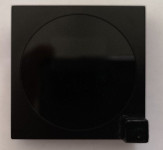
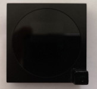

Problem
If you got here then probably because you are in the same situation that I was. You bought these thermostats because they look really nice, in particular together with other Livolo switches and sockets. Then you figured out that they have many issues:
- Wrong temperature
Just after powering up the temperature looks quite ok, but after approx. 2 minutes it starts going up or down. Sometimes there are suddenly jumps of 2 degrees
- No temperature calibration possible
- No delay for switching on/off
If the measured temperature is just between the target temperature and one degree lower, then it can jump frequently one degree up and down. Best practice here is to wait for some time for the temperature to settle. However, this thermostat immediately acts the valve relay, which is annoying due the noise of the relay and probably it is also not the best for the valves
- No indicator if currently heating or not
- No valve maintenance function
If the heating is not in use (summer) then it is best practice to open the valves every week for a few minutes to avoid them from getting stuck. Unfortunately, this is not implemented.
- Unsuitable for bedroom
For a bedroom the display is too bright and won't let you sleep (me at least)
Solution
Probably the easiest solution would be just to get other thermostats but if you bought already several of them and you using other Livolo switches there is no suitable replacement, which would look good and fit into the 40x40mm. Therefore, I started thinking about modifying it and considered writing a new firmware.
Hardware modification (thermometer)
You can find a detailed description of the hardware and circuit on the Hardware Description page
Therefore, the first thing I started to think about was taking the sensor out of the housing to get a better measurement. Fortunately, the thermometer is a standard DS18B20 chip, so I got the SMD version and soldered it on a copper plate for taking the temperature of the environment. (The temperature is measured on the ground pin by the way). Before I bent the pin 1 (DQ) and pin 8 (Vdd) up in order to connect the cable.
 

My new firmware also supports the so-called "parasite power mode", which only requires two wires. So you can connect pin 8 also to ground, together with all others. That makes it a little bit easier to build.
This new sensor replaces then the internal sensor beneath the airflow holes. However, this alone did not lead to much improvement. Now the temperature displayed was too low.
Software
Finally, I came to the point of considering the effort to write a new firmware. Fortunately, the PIC16F690 controller is very well documented and I have a lot of experience in 8-bit assembly programming. This controller supports in-circuit programming and luckily, the board has the connections for the programmer. Nevertheless, I would not solder a connector there, as the pins might scratch the display and you would see them as some dots in the display. The better option is just soldering temporarily the 5 wires directly to it. As the controller has the copy protect bit set, I had to start from scratch.
For programming, I used the PICkit 3 programmer, which is pretty inexpensive.
The final firmware now has these new features:
- Display exactly the measured temperature
- Indicator if currently heating (red = heating, blue = off)
- Manual display off with a long touch on the power sensor
- Anti freeze
To protect your water tubes when you are on holiday, switching off the thermostat does not switch it off completely but sets the temperature to the minimum (5 degrees C / 41 degrees F). Switching it on again will put it back to the last temperature set.
- Setup mode for the following parameters
- Temperature offset
Positive or negative offset for temperature calibration (steps are 0.5 degrees C or 1 degree F)
- Delay for acting the valves
Range 1..99 with a unit of 10s, s from 10s to 16m30
- Light sensor threshold for turning off the display (night mode)
- Valve maintenance
If the valves are closed for more than 7 days then they will be opened for 5 minutes. If the light sensor detects night mode then it is delayed until there is light again.
Hardware modification (light sensor)
For my bedroom, I wanted the display to turn off automatically in the darkness. Therefore, I considered also adding a light sensor. There is another DS18B20 thermometer inside, which is not really useful, so we can use this pin for it. Unfortunately pin 8 (RB6) cannot be configure as A/D converter input, so I connected the external thermometer to this pin and the photo resistor to pin 10 (RB4), which can be used for the ADC. My firmware detects the thermometer automatically. Therefore, you may or may not do this mod.